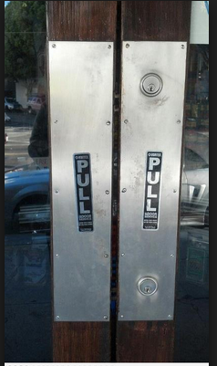

Affordance
Good: This photo displays good affordance because the door knob is self explanatory. Someone who is looking to turn the knob or enter or exit through the door knows which way to turn in right away. There is no second guessing involved.
Bad: This photo represents a bad image of affordance because the doors are labeled "pull", but there is no handle there for people to pull. This arrangement does not make sense.
Signal-to-noise-ratio
Good: This Nike site has virtually no outside noise/distractions on the site that could distract consumers and cause them to leave Nike.com.
Bad: This site for the latest celeb gossip is full of distractions from coupons to other adds that pop up at the top and bottom of the site. That causes users to become annoyed and distracted easily.
Ockham's Razor

Good:This screenshot is the website of a UX consultant.It is very simple, clean, and neat. It gets right down to the point with no distractions along the way.

Bad:This screenshot is from a design website and it is extremely busy! It is hard for a user to come to this site and use it becasue of everything going on. There is not a simple design implemented here.
Mapping
Good: This image is displaying good mapping because the eyes on the stove and the burners match up with one another. Each eye has a burner that turns it off/on and its effident as to what turns on what.
Bad: This image is displaying bad mapping becasue we do not know what turns what on. The eyes are not correlating with the burners.
Hick's Law
Good:On Linkedin the drop down menus display a minimal of 2-4 options for users to choose from. There are not a ton of options that could through users off and make them sit and think about what they should pick.
Bad:This image displays a bad use of Hick's Law because there are more than 2 directions to pick from and it would cause confusion for drivers if they ever came across this. This would also cause serious accidents!